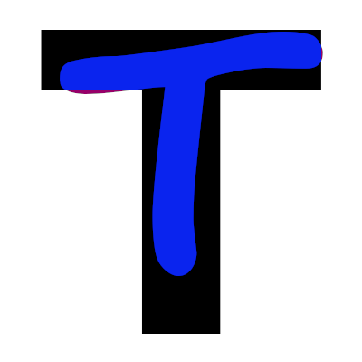
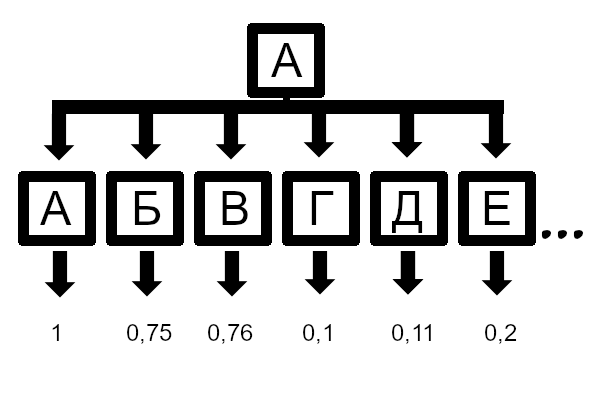

Данная статья посвящена алгоритму распознавания смысла данных поступаемых с датчиков для ЭВМ. Методы описанные в статье могут быть использованы для распознавания текста из изображений, другого смысла изображения, аудиозвука в текст и т.п. В статье не приведены примеры исходного кода, т.к. это сложные приложения, но статья является точкой входа в эти приложения.
Распознавание нужно для того, чтобы процессор понимал математический смысл данных. Т.к. распознанные данные несут смысловую нагрузку с датчиков, необходимую для дальнейшего алгоритма. Т.е. видимая буква распознаётся в байты кодировки символа.
Концепция распознавания: Отличание экземпляра от "не правильных" эталонов, но установление максимально схожего из выборки.
Распознавание должно приносить смысл для процессора. И не должно распознавать всё - для распознавания всего существует сверх искусственный интеллект. И, возможно, это не возможно в плане экономичности технологий, т.к. для этого нужен многозатратный комплект ЭВМ, для распознавания всех моментов времени на Земле в полною не противоречивую антологию знаний и истории. Т.е. сконцентируйтесь пока на распознавании текста при сканировании книг, т.к. "такой сейчас" процессор и комплекс ЭВМ и ктому же через 10 лет начало постинформационной эры и конец информационной.
Пусть у вас есть несколько эталонов (экземпляров, возможно, функциональной или векторной, полиномиальной точности, для обобщений масштаба в дискретных образцах), образец который наиболее похож на распозноваемое изображение, то и есть распознаваемый объект.
Вот и всё. Главное заниматься филологией предметной области и наличие математического базиса, это поможет Вам спроецировать знания на дискретный процессор.
К примеру, растровое изображение не обязательно сравнивать с векторным эталоном, а достаточно по векторному эталону получить растровый слепок того же уровня дискретизации и сравнить их. Т.к. можно ещё сравнивать абсолютный векторный эталон с вектурезируемым контуром, но учитывается, что распознаваемое изображение уже получено с Аналого-цифрового преобразователя определённого уровня дискретизации, но по нему НЕВОЗМОЖНО получить более точно. Растровое сравнивать проще в программировании пока, но и сейчас возможно сравнивание векторное или, правильнее выражаясь, сравнение с абсолютным образцом. Если количество информации тоже, то сравнивайте дискретно (при той же информативности).
Это последовательность символов, представляющих смысловую нагрузку. Задача распознавания распознать символы, а не смысл текста. Задача распознавания смысла текста - это задача искусственного интеллекта. Но распознавание текста поможет в дальнейшем распознавать и смысл текста.
Распознавание текста должно зависеть от языка, т.е. в Вашей программе должна быть возможность выбора языка, или смешанного языка, или шрифта.
Взгляните на рисунки, которые не противоречат концепции распознавания:

Рис 1. Отличие от эталона буквы "Т" буквы "Т" другого шрифта.
Рис 2. Отличие от эталона буквы "Т" буквы "А" другого шрифта.
Как Вы видите у буквы "Т" больше входящих пикселей в эталон, и менее выходящих пикселей из эталона, чем у буквы "А". Их возможно сравнивать, как и векторно, так и пиксельно, т.к. в камерах и сканерах датчики пиксельные, то повторной их распознавание в векторное приведёт к тому, что новый экземпляр будет векторный, но алгоритмы векторизации долгие по времени, и быстрее растроризовать векторный эталон до того же уровня количества информации.
Давайте посмотрим, как буква будет распознаваться:

Рис 3. Схожесть экземпляра буквы "А" с эталонами. Все числа приведены для примера в концепции.
Это сравнение (со всеми эталонами, или масштабируемыми эталонами, или с их аналогами) позволяет распознать эталон. Внутри программы известно, что эталон (наиболее совпавший, не обязательно 100%) соответствует какому символу.
Это механические колебания среды в которой распространяется звук, определённой частоты и определённой амплитуды.
Концепция такая же, что и у текста - она такая в общем, но в зависимости от того, как Вы храните звук.
Это совокупность квадратов (пикселей, квадратных точек), которые располагаются по горизонтали и вертикали и получается разное изображение.
Концепция такая же, что и у текста - она такая в общем.
Возможны и другие виды данных и их распознавание возможно — главное определите информативность, смысл, уровень дискретизации. Это возможно и на словах — главное написать программу, которая даёт прямой результат работы программы для её вида данных.